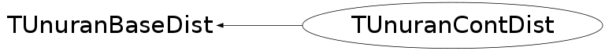

class TUnuranContDist: public TUnuranBaseDist
Function Members (Methods)
public:
| TUnuranContDist(const TUnuranContDist&) | |
| TUnuranContDist(TF1* pdf = 0, TF1* deriv = 0, bool isLogPdf = false) | |
| TUnuranContDist(const ROOT::Math::IGenFunction& pdf, const ROOT::Math::IGenFunction* dpdf = 0, bool isLogPdf = false, bool copyFunc = false) | |
| virtual | ~TUnuranContDist() |
| double | Cdf(double x) const |
| static TClass* | Class() |
| virtual TUnuranContDist* | Clone() const |
| double | DPdf(double x) const |
| bool | GetDomain(double& xmin, double& xmax) const |
| bool | HasCdf() const |
| bool | HasMode() const |
| bool | HasPdfArea() const |
| virtual TClass* | IsA() const |
| bool | IsLogPdf() const |
| double | Mode() const |
| TUnuranContDist& | operator=(const TUnuranContDist& rhs) |
| double | Pdf(double x) const |
| double | PdfArea() const |
| void | SetCdf(TF1* cdf) |
| void | SetCdf(const ROOT::Math::IGenFunction& cdf) |
| void | SetDomain(double xmin, double xmax) |
| void | SetMode(double mode) |
| void | SetPdfArea(double area) |
| virtual void | ShowMembers(TMemberInspector& insp) |
| virtual void | Streamer(TBuffer& b) |
| void | StreamerNVirtual(TBuffer& b) |
Data Members
private:
| double | fArea | area below pdf |
| const ROOT::Math::IBaseFunctionOneDim* | fCdf | pointer to the cdf (cumulative dist.) |
| const ROOT::Math::IBaseFunctionOneDim* | fDPdf | pointer to the derivative of the pdf |
| bool | fHasArea | flag to control if distribution has a pre-computed area below the pdf |
| bool | fHasDomain | flag to control if distribution has a defined domain (otherwise is [-inf,+inf] |
| bool | fHasMode | flag to control if distribution has a pre-computed mode |
| bool | fIsLogPdf | flag to control if function pointer represent log of pdf |
| double | fMode | mode of the distribution |
| bool | fOwnFunc | flag to indicate if class manages the function pointers |
| const ROOT::Math::IBaseFunctionOneDim* | fPdf | pointer to the pdf |
| double | fXmax | upper value of the domain |
| double | fXmin | lower value of the domain |
Class Charts
{kind=link}
{kind=link}
{kind=link}
{kind=link}

Function documentation
TUnuranContDist(const ROOT::Math::IGenFunction& pdf, const ROOT::Math::IGenFunction* dpdf = 0, bool isLogPdf = false, bool copyFunc = false)
Constructor from generic function interfaces manage the functions and clone them if flag copyFunc is true
TUnuranContDist(TF1* pdf = 0, TF1* deriv = 0, bool isLogPdf = false)
Constructor from a TF1 objects function pointers are managed by class
void SetCdf(const ROOT::Math::IGenFunction& cdf)
set cdf distribution using a generic function interface
double DPdf(double x) const
evaluate the derivative of the pdf if derivative function is not given is evaluated numerically
TUnuranContDist * Clone() const
Clone (required by base class)
{ return new TUnuranContDist(*this); }void SetDomain(double xmin, double xmax)
Set the distribution domain. If min < max a domain is defined otherwise is undefined
bool GetDomain(double& xmin, double& xmax) const
check if distribution has a defined domain and return in case its domain
bool HasPdfArea() const
check if distribution has a pre-computed area below the Pdf
{ return fHasArea; }bool IsLogPdf() const
flag to control if given function represent the log of a pdf
{ return fIsLogPdf; }